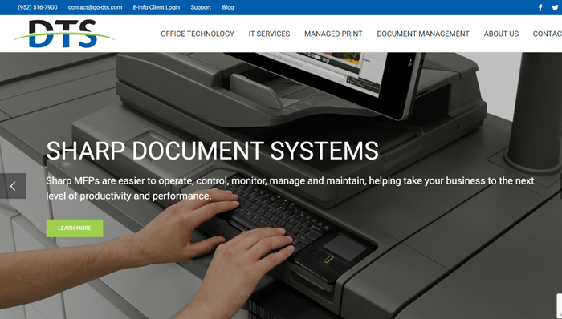

DTS
DTS was a client we handled SEO, Google Ads, and other digital marketing tasks for. Their website was outdated, and they wanted to add our web services as well. It was built in an older website builder, and we converted it to WordPress and gave it a complete overhaul. We migrated any content on their site, including blogs, articles, images, and product listings. I was tasked with helping with the design process, creating new pages, updating the old pages once they were migrated to ensure that they were up to par on all devices.
The most challenging aspect of this project was learning their old website builder and navigating it. Their site would frequently crash while I was in the backend, making it challenging to accomplish what I needed to. Patience is always a key aspect in dealing with legacy code. Once we got past that, the design process and page creation weren't too tricky, although there were many pages to create and optimize after converting them to WordPress.